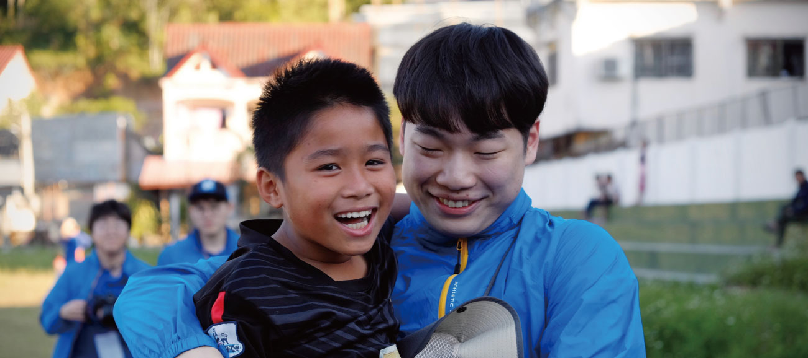
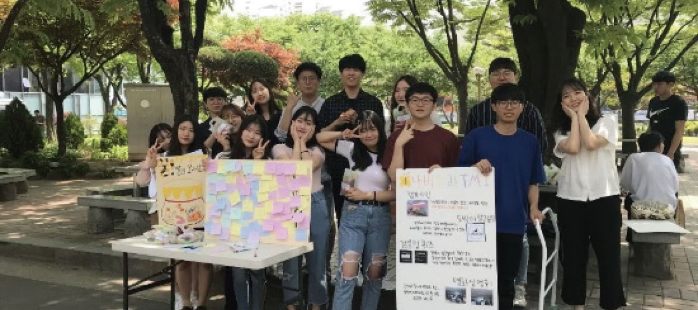

사회복지학부의 교과과정 특성을 살펴보면, 1학년은 사회복지개론 및 사회문제와 인간행동에
대한 이해를 바탕으로 사회복지학문의 기초적인 지식을 함양하는데 초점을 두고 있으며,
2학년과 3학년에서는 다양한 사회복지실천 분야와 대상자에 대해 학습할 수 있는 기회를
제공함. 특히, 3학년 2학기와 4학년 1학기에는 사회복지실무실습을 통하여 학생들에게 실제
사회복지현장을 경험할 수 있는 기회를 제공함으로써 준비된 사회복지사 양성에 초점을 두고
있음. 4학년에는 상담실기, 가족상담 등의 심화된 사회복지실천교과목과 더불어 거시적인
측면에서의 사회복지사의 역할에 대해서도 학습하게 됨.
° 체계적인 현장실습: 숭실대학교 사회복지학부는 현장실습 교과목을 강조하여 실습전담교수
및 담당조교가 다양한 영역의 사회복지 현장과 긴밀히 소통하며 실습생들과 기관의
수퍼바이져와 지속적이고 긴밀한 소통을 통하여 학생들의 사회복지 현장실습을 밀착 관리하고
있다. 또한, 학생들이 실습을 통하여 사회복지 현장을 경험하고 학교에서 배운 학문적이고
실천적인 기술을 현장에 적용하고 또한 기여 할 수 있도록 적극적으로 지원하고 있다.
2. 세부 전공영역의 교수진
숭실대학교 사회복지학부는 사회복지실천전공과 사회복지정책·행정전공을 아우르는
사회복지 영역의 세부전공 별 우수한 교수진으로 구성된 13명의 교수진이 폭넓은 커리큘럼을
바탕으로 한 다양한 교육서비스를 제공하고 있다. 모든 교수진이 각각의 전문 분야에서
활발한 학문적이 활동을 하고 있다. 각 교수별 전공 분야는 다음과 같다.
또한, 숭실대 사회복지학과는 본교를 졸업하고 학문적인고 실천적인 역량을 갖춘후에
모교로 교수로 돌아오는 교수들이 타 대학이나 타과에 비하여 많은 편이다. 특별히 숭실대
사회복지학과를 졸업하고 동대학원을 졸업하고 미국에서 석사와 박사학위를 취득하고
미국에서 교수 생활을 하다가 모교로 돌아온 교수가 많은 것 또한 큰 특징이다. 숭실대학교
학부 94학번으로 본교에서 학부와 대학원 과정을 이수하고 미국의 Washington University
에서 사회복지학 석사 과정과 University of Pennsylvania 에서 박사과정을 마치고 미국
테네시 주 University of Tennessee Nashville 에서 교수직을 하다가 2014년 본교로
돌아와서 정신건강 분야에서 학문적 실천적으로 활발하게 활동중인 이성규 교수가 대표적인
사례이다. 이성규 교수는 “숭실대학교 사회복지학부의 가장 큰 장점은 다양한 전공의
교수님들이 계시고, 사회복지의 다양한 실천분야에 실력있는 동문들이 자리잡고 있어 국내
사회복지 실천분야의 선두주자로 달리고 있다는 것입니다. 또한, 51년의 역사로 다져진
선후배들간의 탄탄한 네트워크를 자랑하고 있습니다.” 라고 말하며 동문 출신의 교수로서의
자부심을 표현하였다.
이러한 교수진들의 역량을 기반으로 사회복지학부는 사회과학연구소, 사회복지연구소,
갈등해결평화연구소, 가족치료 연구소, 초고령사회연구소 등을 운영하며 학문적인 방향성
제시와 실천 및 정책적 역량 개발에 노력하고 있다. 또한, 장애인복지분야의 김경미 교수와
여성복지분야의 이지하 교수는 각각 2018-19년 과 2019-20년에 한미교육위원단의 Fulbright
Senior Research award를 2년 연속 수상하며 미국에서 연구년을 보내며 활발한 연구 활동
또한 이어가고 있다.
배임호 교수
청소년·교정복지
노혜련 교수
아동·학교사회복지
정무성 교수
사회복지행정
유태균 교수
사회복지정책
허준수 교수
노인·사회복지
박태영 교수
가족치료
이상은 교수
사회복지정책
이채원 교수
의료사회복지·다문화
김경미 교수
장애인복지
이성규 교수
정신건강
이지하 교수
여성·사회서비스
유석구 교수
아동·사례관리
한우재 교수
사회복지행정
3. 학부 특성화프로그램
° 워크숍
숭실대 사회복지학부는 선후배간의 교류도 활발하다. 대표적인 게 매년 열리는 워크샵으로
일년에 한 번씩 사회복지학부 출신 동문 선배와 교수, 학생들이 한자리에 모여 1박 2일
동안 진행한다. 워크샵은 사회복지학부의 오래된 전통으로 동문들과 그룹별 멘토링을 통해
학생들에게 다양한 진로탐색의 기회를 제공한다. 아동복지, NGO, 의료사회사업, 장애인 복지,
공단, 공무원, 학교, 연구소 등 사회복지 분야의 다양한 분야의 선배들과 학생들이 직접 활발한
의사소통이 이루어 진다. 학생들은 이러한 기회를 통하여 자신들의 꿈이나 진로를 설계하는데
큰 도움을 받게 된다. 아래의 사진은 코로나로 인하여 온라인으로 워크샵을 진행한 사진이다.
° 복지투어
진로/취업지원과 관련한 또 다른 대표적인 프로그램으로 단기집중 봉사활동과 복지투어가
있다. 2011년도 부터 진행되어온 복지투어는 강원, 충청, 전남, 전북, 경북, 제주 등 전국의 주요
사회복지기관들을 방문하고 사회복지 현장의 동문 및 실천 전문가들 및 서비스 대상자들을
만나서 봉사활동 및 특강 등의 프로그램을 통하여 현장을 체험 프로그램이다. 복지투어의
특징은 학생들의 주도로 프로그램 및 방문 선정이 이루어진다는 점이다. 즉 학생들이
전국의 주요 사회복지기관을 대상으로 봉사활동과 현장방문을 기획하고 추진함으로써
다양한 사회복지기관들의 특성과 현황을 이해하고, 실제 기관방문 및 봉사활동을 통해
예비사회복지사의 자질과 능력을 배양함에 목적을 두고 있다.
° 사회복지 국제학술교류 지원
학생들의 현장 경험을 제고하고 교수들의 전문 역량 강화 및 본 프로그램에 대한 홍보, 질
제고를 위해 국외 여러 관련 전문 기관들과의 협력, 네트워킹을 강화를 구축하고 있다. 일본의
와세다대학교와 연례행사로 학술교류를 실시하고 있으며 이는 학생들에게 국제사회복지의
학문적 동향에 대한 이해를 확장시키고, 이 과정에서 학생들을 글로벌 마인드를 가진 리더로
훈련시키는데 도움을 주었다는 측면에서 긍정적인 평가를 받고 있다. 또한, 사회복지학부
자체 발전 기금으로 국제 학술 교류시 경비를 본교 학생들의 해외 체제 경비 및 교통비 지원를
지원하고 있다.

4. 장학금 혜택
다양한 장학금 제도: 사회복지학부 자체 발전 기금을 조성하여 학과 재학생들을 위한 다양한
장학제도 (노혜련 장학금, 안성태 장학금, 조성경 장학금, 신혜정 장학금)가 마련되어 있다.
가계곤란한 학생들을 위한 안성태 장학금과 새터민 및 유학생을 위한 노혜련 장학금은 매
학기별, 각종 동문 장학금 등이 다양하게 있어 학교생활에 잘 적응하고 학업에 전념할 수 있는
기반을 마련해 주기 위하여 노력하고 있다.
5. 학부내 전공을 강조한 다양한 소모임 활동
사회복지학부에서는 다음과 같이 총 8개 소모임이 활발하게 활동 중이다. 작년 코로나19로
인해 오프라인 활동에 제약이 있었지만, 그럼에도 불구하고 온라인상에서도 캠페인활동,
극본집필, 토론 등의 적극적인 활동을 펼치고 있다.
은빛나래: 노인복지에 대한 다양한 이슈를 주제로 활동People socio: 사회심리극을 다루어 정기공연 개최사회사업연구학회: 다양한 사회문제에 대해 토론하고 탐구NGO, 청소년, 아동분야에서 봉사활동과 캠페인을 진행하는 ‘사랑의 실’이라는 의미의 애사밀알: 인권보호 캠페인 및 다양한 대상을 위한 봉사 프로그램을 진행Social eleven: 사회복지학부 축구소모임신우회: 사회복지학부 내 기독교 학생들의 모임나비효과: 대학생 도박문제 예방활동단으로 활동
비교적 짧은 전통의 소모인 나비효과는 청년 도박문제 예방활동단으로, 권역 내 청년들에게
도박문제의 심각성에 대해 알리고 청년들의 도박문제 예방 및 해결을 위한 활동을 진행하는
숭실대학교 사회복지학부 소모임이다. 나비효과에서는 온, 오프라인 캠페인을 통해
대학생들과 권역내 대학생 및 청년들의 도박문제를 예방하고 도박문제를 겪을 때 도움을 줄
수 있는 창구가 가까이 있음을 알리고 있다. 아래는 나비효과에서 한국도박문제관리센터와
함께 활동하며 주최하는 캠페인의 사진이다. 나비효과에서 활동하고 있는 숭실대학교
사회복지학부 김민희 학생은 “저는 2019년 나비효과에 처음들어와 지금까지 활동하고
있습니다. 나비효과 활동을 통해 한국도박문제 관리센터에서 주최하는 행사에 참여하고
여러 캠페인을 기획하면서 중독문제 특히 도박중독 문제에 대하여 보다 가까이서 생생하게
배우고 있습니다.”라고 소감을 밝혔다.

6. 높은 취업률, 인지도가 높은 취업처
숭실대학교 사회복지학부는 2021년 3월 기준 1,877명, 석사는 919명, 박사는 160명을
배출하였다. 최근 10년간 졸업생들은 공무원, 국민건강보험공단, 근로복지공단, 초록우산
어린이재단, 국민건강보험공단, 초록우산어린이재단, 굿네이버스, 사회복지공동모금회,
월드비전, 홀트아동복지회, 대한적십자사뿐만 아니라 종합사회복지관, 사회복지 재단 등의
다양한 사회복지 분야로 진출하고 있다. 또한, 다수의 졸업생들이 종합사회복지관 관장 및
사회복지시설 시설장을 맡으며 사회복지 영역의 중요한 인재로서의 역할을 감당하고 있다.
사회복지학과 전공자들의 진출 분야는 NGO·대기업·병원·공단 등 복지관 외에도 진로가
매우 다양하다. 과거에는 종합사회복지관, 장애인복지관, 노인복지관 등 사회복지의
일선에서 활약하는 경우가 대부분 이었다면 최근 들어 다양한 분야와 기관으로 변화되고
있다. 일차적인 복지 현장 이외에 학생들이 진출하는 분야는 월드비전이나 굿네이버스,
초록우산 어린이재단과 같은 비정부기구(NGO)다. 또한, 의료사회복지나 정신건강 분야를
선택하여 병원이나 보건 현장에서 종사하는 경우도 있다. 의료사회복지는 병원에서
근무하는 사회복지사의 영역이며, 타 기관과 달리 사회복지사자격증 1급을 취득하고 1년
동안의 수련과정을 거쳐야 한다. 법으로 제정돼 있는 건 아니지만 병원에서 채용할 때
수련 과정을 거친 사람을 선호하기 때문이다. 이와 유사한 형태가 정신보건사회복지사다.
정신보건사회복지사는 병원에서 근무하지만 조현병이나 우울증 등 좀 더 심각한
정신질환이나 지역사회에서 중독이나 자살 등과 관련한 업무를 담당하는 특화된 영역 중의
한 가지라고 할 수 있다.
이외에도 숭실대학교 사회복지학부의 졸업생들은 사회복지전담 공무원이나 국민연금공단·
건강보험공단, 근로복지공단, 사회복지공동모금회, 보건사회연구원 등으로 취업하고 있다.
또한 연구와 교육 분야의 인재 양성에 힘쓴 결과 숭실대학교 사회복지학부나 대학원을
졸업하고 전국 및 전세계의 대학에서 교수로 활동하고 있는 교수도 80여 명이나 된다. 특히
최근에는 사회복지 학부와 대학원을 졸업하고 해외 학교 진학하는 학생들도 점차 늘어나고
있다. 2022년 8월 기준으로 Univ. of Washington university, University of Pittsburgh,
University of Tennessee, Columbia University 등 미국의 사회복지 명문 대학의 석사 박사
과정에 진학하였다.